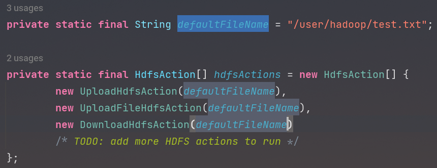

实验 3 - 熟悉常用的 HDFS 操作 - Java 部分¶
在本次实验中，我们需要编写 Java 代码，同时还要使用 Hadoop 命令完成一系列操作。难度不高，但相对冗长，需要消耗一定时间。
这篇是使用 Java 项目实现功能的部分。
搭建 Java 开发环境¶
- 下载 OpenJDK：
- Windows (x86_64/x64) （Java 8，Adoptium，建议使用
.msi版本） - macOS (x86_64) （Java 8，Adoptium，建议使用
.pkg版本） - Linux（使用包管理器安装）
- 如果你是 arm64 架构系统，可以考虑使用 Azul Zulu JVM
- Windows (x86_64/x64) （Java 8，Adoptium，建议使用
- 下载 IntelliJ IDEA (Community Edition)
选择免费的Community版本也可以顺利完成实验，不必使用Ultimate版本。
为什么还在用 Java 8?
连 Minecraft 1.18 都需要 Java 19 或更高版本才能启动了。但至于 Hadoop，这是一个需要去问 Apache 的问题。Hadoop 目前仅有 Java 8 的完整支持，Java 11（2018 年发布）仍然处于“实验性”阶段。所以很抱歉，我们只能用 Java 8 了。
请不要使用 IBM Semeru JDK
IBM Semeru OpenJ9 VM 虽然提供了良好的内存效率，但存在和 Hadoop 的已知兼容性问题。使用 IBM Semeru 将使实验无法进行。你需要切换到其他 JVM 才能继续。
下载示例项目¶
在下载、安装 IDE 时，你需要 下载 Java 模板项目。
安装完毕后，解压得到完整目录。在 IDE 菜单中，选择 File → Open...，或在主界面选择 Open.
{kind=link}
- 如果被问及是否信任此项目，选择 Trust Project.
- 在 IDE 右上角找到 m Maven 标签页
- 选择 Sync 来进行 Maven 依赖下载。
{kind=link}
随后，你可以在 IDE 底部（左下角）找到  Build 标签页，查看依赖处理进度。
Build 标签页，查看依赖处理进度。
{kind=link}
验证¶
现在，我们的目录结构应该像这样：
{kind=link}
启动 Hadoop 集群¶
同时，启动所有节点的虚拟机，再启动 Hadoop. 可以参考实验一来确认步骤。随后再使用 SSH 连接到 namenode，以便运行接下来的命令实现：
完成任务！¶
前置条件已经就位，我们开始完成下面的任务吧。
在 IDE 左下角找到 TODO 标签页，根据注释中的要求，填补对应区域的代码。
{kind=link}
编写属于你自己的 FSDataInputStream¶
这是本实验中必须实现的一个步骤。
模板文件位于 src/main/java/org/example/extend/ExtFSDataInputStream.java.
{kind=link}
以下代码可供参考：
package org.example.extend;
import org.apache.hadoop.fs.FSDataInputStream;
import java.io.*;
import java.nio.charset.StandardCharsets;
public /* (1)! */ class ExtFSDataInputStream extends FSDataInputStream {
protected InputStreamReader streamReader = new InputStreamReader(in, StandardCharsets.UTF_8);
public ExtFSDataInputStream(InputStream in) {
super(in);
}
public String readLineExt() throws IOException {
StringBuilder buf = new StringBuilder();
char[] cbuf = new char[1];
try {
while (streamReader.read(cbuf, 0, 1) != -1) {
if (cbuf[0] == '\n')// (2)!
return buf.toString();
buf.append(cbuf[0]);// (3)!
}
} catch (EOFException e) {
return buf.toString();// (4)!
}
return buf.toString();
}
}
- 虽然加上
static关键字使其成为静态类仍然可用，但不是推荐操作 - 如果遇到换行符则返回当前缓冲区中数据（一整行已读完）
- 如果遇到任意非换行符字符则压入缓冲区中
- 如果遇到文件终止，则完成读取，将缓冲区作为结果返回
随后，你可以这样调用它：
/*
* Variables:
* - fs: org.apache.hadoop.fs.FileSystem
* - logger: org.slf4j.Logger
*/
ExtFSDataInputStream stream = new ExtFSDataInputStream(fs.open(path));
logger.info("Opening file for read: {}", path);
int line = 0;
for (String lineBuf = stream.readLineExt(); !lineBuf.isEmpty(); lineBuf = stream.readLineExt()) {
line++;
logger.info("L{} {}", line, lineBuf);
}
logger.info("(EOF)");
1. 上传数据¶
要求
向 HDFS 中上传任意数据到一个文件，如果指定的文件在 HDFS 中已经存在，由用户指定是追加到原有文件末尾还是覆盖原有的文件。
这是本实验中必须实现的一个步骤。
模板位于 src/main/java/org/example/hdfs/impl/UploadHdfsAction.java.
{kind=link}
你可能需要用到这些函数：
fs.exists()fs.append()fs.create()stream.write()
2. 上传文件¶
要求
从本地文件系统任选一个文件向 HDFS 中传输。
这是本实验中必须实现的一个步骤。
模板位于 src/main/java/org/example/hdfs/impl/UploadFileHdfsAction.java.
你可能需要用到这些函数：
fs.copyFromLocalFile()
3. 下载文件¶
要求
从 HDFS 中下载指定文件，如果本地文件与要下载的文件名称相同，则自动对下载的文件重命名。
以下步骤为可选步骤，如果你想实现第一个以外的更多功能，你可以：
- 在
src/main/java/org/example/hdfs/impl创建新类

- 让新类继承（二选一）：
org.example.hdfs.HdfsAction：适用于不与特定文件名文件交互的动作org.example.hdfs.HdfsActionWithFileName：适用于需要与特定文件名文件交互的动作，自带一个path成员，通过构造函数传入
在这里，我们选择继承 HdfsActionWithFileName 类。
- 实现所有需要实现的函数，可参考
UploadHdfsAction.java - 在
src/main/java/org/example/Main.java中，找到HdfsAction[] hdfsActions，添加你的新类

{kind=link}
{kind=link}
{kind=link}
4. 读取文件¶
要求
将 HDFS 中指定文件的内容输出到终端中。
Java 实现
Java 9 以上支持持续读取流至结尾，本实验采用 Java 8 时，可考虑结合我们自行实现的 ExtFSDataInputStream:
5. 读取元数据¶
要求
显示 HDFS 中指定的文件的读写权限、大小、创建时间、路径等信息。
你可能需要用到这些函数：
fs.getFileStatus()
利用模板项目中的工具！
模板项目中 src/main/java/org/example/utils/HdfsUtil.java 提供了 getLsFormat() 函数，可以用于输出类似 ls -la 格式的文件信息。
6. 递归列出元数据¶
要求
给定 HDFS 中某一个目录，输出该目录下的所有文件的读写权限、大小、创建时间、路径等信息，如果该文件是目录，则递归输出该目录下所有文件相关信息。
你可能需要用到这些函数：
fs.listFiles()
利用模板项目中的工具！
模板项目中 src/main/java/org/example/utils/HdfsUtil.java 提供了 getLsFormat() 函数，可以用于输出类似 ls -la 格式的文件信息。
类型兼容性
LocatedFileStatus 类可以直接隐式转换为 FileStatus 供 getLsFormat() 函数使用。
7. 删除文件¶
要求
删除 HDFS 中指定的文件。
顺序不对？
鉴于 Java 实验实现的不同，相比起 Shell 版本，步骤顺序略有调整。
8. 创建文件¶
要求
提供一个 HDFS 的文件的路径，创建该文件（可为空）。
9. 创建目录¶
要求
提供一个 HDFS 内的目录的路径，创建该目录。
10. 删除目录¶
要求
删除 HDFS 中指定的目录，由用户指定目录中如果存在文件或目录时是否（递归）删除目录。
11. 合并文件¶
要求
在 HDFS 中合并任意两个文件到原地或新文件。
12. 移动文件¶
要求
在 HDFS 中，将文件从源路径移动到目的路径。
运行测试¶
在完成编写以后，在 IDE 右上角找到运行选项，选择 Main 下拉菜单 → Edit Configurations...
{kind=link}
在打开的新窗口中，修改启动参数为 你的 namenode IP:8020，如下图：
{kind=link}
完成后按 OK 保存，点击右上角 Run 按钮运行测试。
Changelog / 更新日志¶
- 2023/03/17
winutils.exe编译成功了！追加了使用winutils.exe在 Windows 上完成实验的附录章节- 更改了“追加文件内容”为“合并文件”
- 2023/03/12
- 添加了 Further Reading 章节
- 2023/03/10
- 添加了更多的提示
- 分离出 Shell 部分和 Java 部分
- 修复模板项目 SLF4J 多重绑定问题
- 修复模板项目在 Windows 环境下运行时与本地文件系统交互问题
- 2023/03/09
- 更改为 Scaffold-Code 模式
Further Reading / 扩展阅读¶
如果你有时间，欢迎你阅读这里的内容。这里的内容与实验无关，但也许你可以从作者的角度了解一些准备实验过程中发生的趣事。
这只是扩展阅读
这个章节只是为你提供一些额外的背景信息，期末考试不会涉及任何相关内容 ;)
本次实验采用了全新的 Scaffold-Code 模式，即你可以获得一个完整的程序框架，大部分内容已经为你准备就绪，可以使用。但部分核心的代码处于缺失状态，需要你手动补充。整个模板项目的代码库均为从零开始，在准备模板项目的时候，作者自身也遇到了一些很有意思的问题。
程序结构¶
整个程序分为以下若干部分：
Main：程序入口点，自动化执行所有hdfsActions[]数组中定义的所有操作hdfs.HdfsAction：定义一个在 HDFS 上执行的操作hdfs.HdfsActionWithFileName：HdfsAction的延伸，为其增加了一个org.apache.hadoop.fs.Path类型的变量path，自带一个用于初始化的构造函数utils.HdfsUtil：包含函数getLsFormat()，可以把 HDFS 内文件权限信息转换为ls格式的字符串utils.TerminalUtil：包括函数askConfirmation()，用于向用户提问“是/否”，适用于某些需要用户选择的场合
结构化的程序设计使得每新增一个操作时，只需要少量的代码即可完成，余下的操作均由主程序框架自动执行，包括错误处理和运行统计。这样的设计也可以让程序可维护性更好。
新奇的 JVM, 古怪的问题¶
作者曾经使用的是 IBM Semeru JDK，因为其内存效率高的 OpenJ9 JVM. 但 Semeru JDK 中缺失了 Hadoop 登录和身份认证所用到的实现，故会导致用到 Hadoop 包的 Java 应用程序无法启动，也就有了文章最开始的关于 IBM Semeru JDK 的警告提示。
经过测试，Eclipse Temurin (AdoptOpenJDK / Adoptium) 和 Oracle JDK（均使用 HotSpot JVM）无运行问题。
依赖地狱，log4j 和 slf4j¶
即使是一个空项目，不经过特殊处理，只要引用了 hadoop-common 包，在启动时你一定会遇到这样的输出：
SLF4J: Class path contains multiple SLF4J bindings.
SLF4J: Found binding in [jar:file:...]
SLF4J: Found binding in [jar:file:...]
SLF4J: See http://www.slf4j.org/codes.html#multiple_bindings for an explanation.
SLF4J: Simple Logging Facade for Java. 广泛用于输出结构化的日志信息。
经过一番依赖分析，可以发现类似这样的依赖结构：
- hadoop-common
- slf4j-reload4j
- zookeeper
- slf4j-log4j12
- ...
- ...
也就是 hadoop-common 包同时引用了两个 SLF4J 后端，导致了程序启动时，SLF4J 检测到了多个后端，自动选取了其中一个使用，但这类似于 C++ 中的“未定义行为”，是不安全也不稳定的，所以会收到这样的警告。
由于 slf4j-reload4j 基本可以视作 log4j12 后端的平行替代，所以我们可以在 Maven 配置即 pom.xml 中，为 hadoop-common 包添加排除条件，从其中排除掉一个多余的 slf4j-log4j12 后端：
<exclusions>
<exclusion>
<groupId>org.slf4j</groupId>
<artifactId>slf4j-log4j12</artifactId>
</exclusion>
</exclusions>
Apache, *nix 和 Windows NT¶
Apache 系软件（比如 Hadoop）在设计时通常是和（类）UNIX 系统紧密联系的，Hadoop 的 HDFS 设计高度贴近 *nix 模型，所以实验项目不需要特殊处理即可在 Linux 和 macOS 正常运行。但是 Windows 采用了的 NT (New Technology) 内核模型和 *nix 大相径庭，导致 Hadoop 应用在和本地文件系统交互时由于文件系统设计不一致而发生异常。可参见 Apache Confluence 原文。
为此，Apache 官方提供了 winutils.exe 作为 Windows 平台下特殊情况的解决方案。那么 winutils.exe 能做什么？主要有两点：
- 通过 Windows API 实现 POSIX 风格文件访问权限
- 进而，实现
file://文件系统
Apache 官方表明并不直接提供 winutils.exe 的二进制文件（你们是不是没有听说过一个叫 CI 的东西……）。正常情况下，我们只需要寻找对应版本的 winutils.exe 即可完成任务，让使用 Hadoop 的应用程序正常运行。但实验采用的最新稳定版 Hadoop (3.3.4) 并没有提供现成的 winutils.exe 使用。所以呢？
是的，作者的确尝试过使用 Hadoop 3.3.4 的源代码自行编译 winutils.exe，但以失败告终。
正当绝望要放弃的时候，希望的光出现了。
{kind=link}
按你胃 Anyway，有一个 GitHub 项目（ globalmentor/hadoop-bare-naked-local-fs ）另辟蹊径——通过实现一个新的 FileSystem 来接管 Hadoop 对本地文件系统的访问，本质上绕过了 Apache 的 winutils.exe 逻辑。
所以？我们的项目里出现了这样 Maven 依赖：
<dependency>
<groupId>com.globalmentor</groupId>
<artifactId>hadoop-bare-naked-local-fs</artifactId>
<version>0.1.0</version>
</dependency>
和这样的 Java 代码：
if (WINDOWS) {/* (1)! */
logger.info("Windows detected, will try using WinUtils workaround.");
conf.setClass("fs.file.impl", BareLocalFileSystem.class, FileSystem.class);/* (2)! */
}
- 检测是否是 Windows 系统
- 设置
file://类型文件系统的实现为com.globalmentor.apache.hadoop.fs.BareLocalFileSystem
实际上这样设置就（单纯在 Windows 上）绕过了 Apache 自带的 file:// 文件系统实现。但 Hadoop 内部判断逻辑仍然会因为识别到 Windows 而尝试检测 winutils.exe 并且提示“Windows Problems”.
在 Linux 和 macOS 上，由于 Apache 本身的实现就可以正常使用，我们不将其替换为第三方方案。
剧情反转？¶
后续：偶然发现 winutils.exe 源码位于 hadoop-common-project/hadoop-common/src/main/winutils，是一个使用 Visual Studio 2010 创建的项目。遂使用 Visual Studio 2022 升级项目并编译之，不成功。
TL;DR: 在 Visual Studio Developer Prompt 中使用以下命令，可以调用 MSBuild 顺利编译：
msbuild winutils.sln /nologo /p:Configuration=Release /p:Platform=x64 /p:OutDir=bin\x64 /p:IntermediateOutputPath=WinUtils-obj\ /p:WsceConfigDir="../etc/config" /p:WsceConfigFile="wsce-site.xml"
甚至顺手编译了 ARM64 版本的 winutils.exe 以供使用。你需要安装 Visual Studio C++ 桌面开发工作负载才能编译这个项目。
如有需要， 请自取。
如果你需要使用 winutils.exe 的方案，你可以：
- 任意找一个路径放置，比如
C:\hadoop\bin\winutils.exe（一定要把winutils.exe放在一个名为bin的目录里） - 在 IDE 右上角找到
Main运行配置，选择Edit Configurations...，为Main配置文件增加类似以下环境变量： - 在
Main.java中注释掉上述提及到的if (WINDOWS)代码块以去除 Windows 缓解方案 - 再次运行尝试
log4j 配置文件¶
在解决这些问题以后，我们希望清除掉无必要的警告（比如仍在 Windows 上出现的 winutils 消息），庆幸的是，我们可以在 log4j 配置文件中针对性地消除掉这些消息。
<logger name="org.apache.hadoop.util.NativeCodeLoader">
<level value="ERROR"/>
</logger>
<logger name="org.apache.hadoop.util.Shell">
<level value="ERROR"/>
</logger>
现在，我们得到的就是干净的启动了，不会出现多余的日志信息。
或者你也可以干脆尝试使用编译出来的 winutils.exe 来消除警告。
剧透
实验四在使用 HBase 时和实验五 MapReduce 编程时，会出现类似的这些情况，届时我们也会用到这些经验。